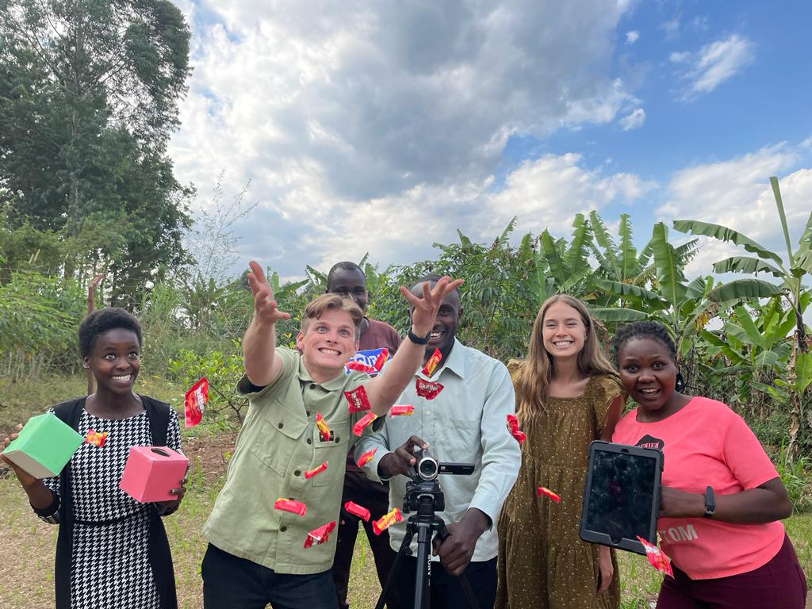
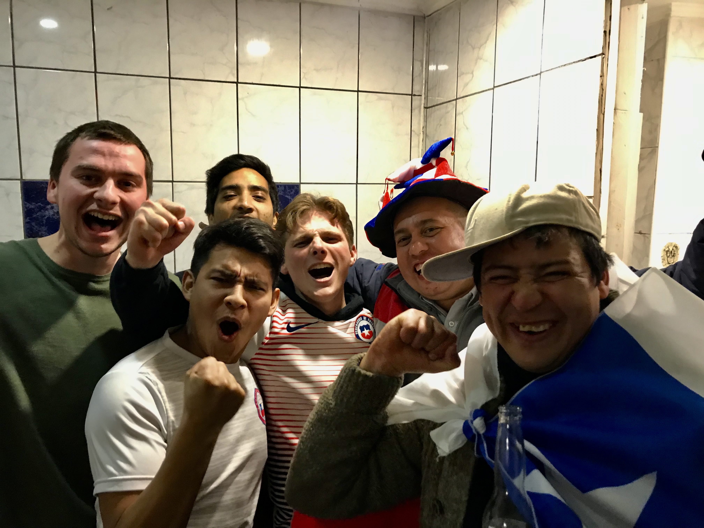
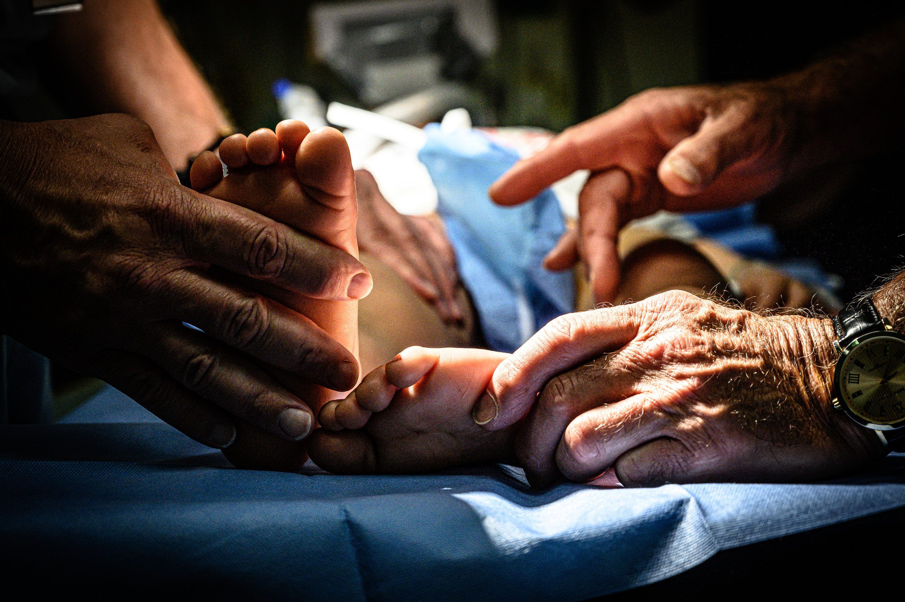
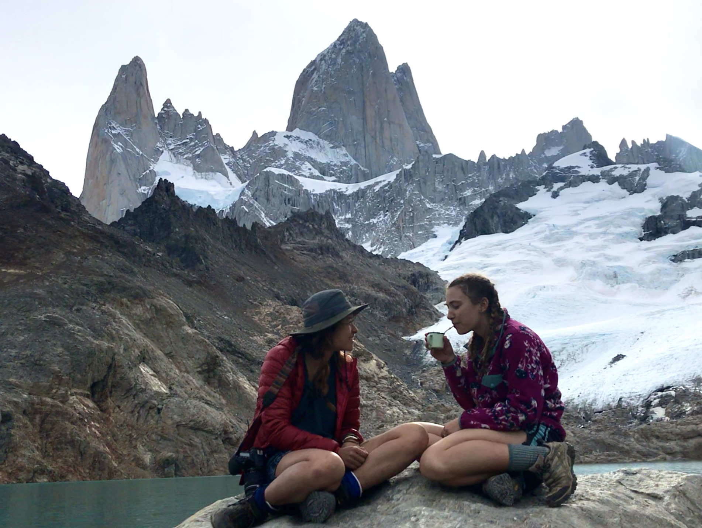

Uganda
In our second research trip of 2022, Abby McLaughlin and I visited Kasiisi Primary School just south of Fort Portal, Uganda.
We are so grateful to our partners at Kasiisi Primary and the Kibale Forest Schools Program to be able to have hundreds of students participate in our activities.
During our visit, we were fortunate to spend time with the wonderful people and see the stunning natural world in western Uganda.
Here is the research team! (left to right): Unity, me (in everyones' way), Michael, Theogen, Abby, and Olive.

Cordillera Huayhuash
In our first trip of 2022, Abby and I went to Montaro Valley in the high Andes of Central Peru.
There, we worked our on-site Research Coordinator Samantha Bangayan and the San Pedro de Saño primary school to have hundreds of students participate in the activities.
In addition, we were grateful to explore the Montaro Valley and meet great friends and collaborators!
Here is the research team! (left to right): Marco, Keila, Abby, me, Xiomara, and Estefany.
Chile
In 2019, I spent 7 months in South America for a spanish intensive exchange program. We were based in Santiago, Chile where I took classes at la Universidad de Chile.
Being the only english speaker in my classes was a pretty good way to get me oriented to the language, and being in such a vibrant community of young people was a great way to get me oriented to the culture.
The entire stint down there felt segmented into many components (some of which I talk about below), but the time as a whole kickstarted my desire to get out in the world.
Here I am with some housemates and new friends watching Chile (lose) in the Copa America semifinals.

Cordillera Huayhuash
In July 2019, my friend Ezra and I set out on an eight-day backpacking trip through Cordillera Huayhuash in the Peruvian Andes.
The trek was a fairly challenging one, spanning approximately 120km at an elevation of about 4,500m. We were one of the only ones on the trail that weren't using donkeys to haul our gear and one of the only ones who spoke spanish with the porters.
This sort of gave us the reputation of the "burros humanos," getting fed the leftovers from the meals made by the porters as we shivered over our backbacking stove.
It was exciting, exhausting, and enlightening.
Here I'm taking a breather with a porter after climbing Paso Siula, one of the seven passes between 4,500m and 5,000m along the trek.
IMA Helps – Paraguay
A family I am close with back home is involved in running a medical mission organization that helps communities lacking access to medical attention abroad.
In 2019, they were going to Paraguay and told me I should look into meeting up with them. As it turned out, the schedules aligned perfectly and I was able to join them as my last leg in South America.
I began working as a runner but quickly made it clear that I would be most useful translating. I worked in triage for several days, seeing close to 100 patients each day.
Later on, I was moved to surgery. Being able to work closely with the medical professionals and the patients was incredible, and it (almost) made me think twice about transferring out of premed freshman year.

Patagonia
Toward the beginning of the South America stint, me and the other students in the program planned a 19 day trip through Patagonia. We didn't know each other very well yet and had a pretty rugged itinerary with a lot of time planned together.
Luckily, we were a seamless traveling group with great chemistry. It turned out to be a classic. We started in Coyhaique and worked our way down through the Aysén region. Hiking, busing, hitchiking, hiking, sleeping on strangers floors, and hiking.
We moved over to the south and road tripped the rest of the way. We zig-zagged through Magallanes from Punta Arenas, to El Chaltén, down to Tierra del Fuego, and back.
The scenery, the people, and the pace of life those few weeks completely moved me. I know it's clichet, but yeah.
Here are my friends Sage and Sasha sipping on some mate under Cerro Fitz Roy.
